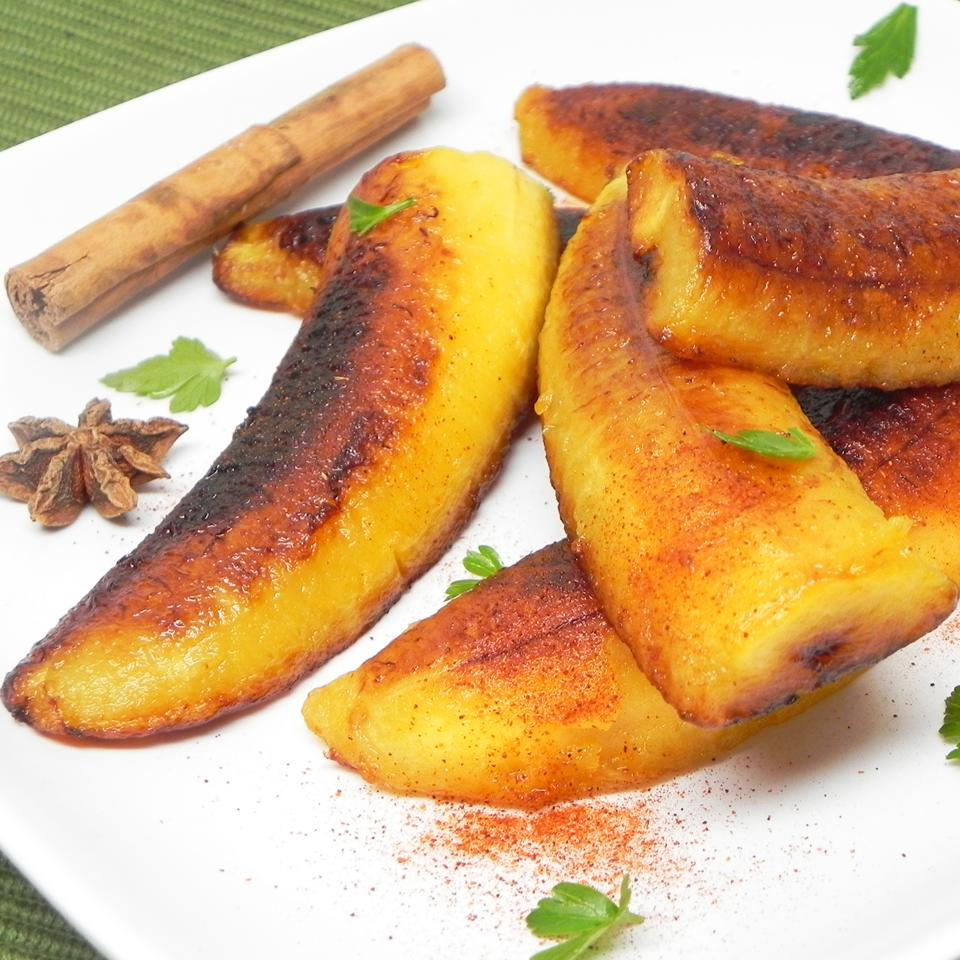

Fried Salvadorian Sweet Plantains

Description
A Salvadorian treat, these homemade tortillas stuffed with cheese are
great with a traditional coleslaw called curtido. To serve, slice open one
side of a pupusa, and spoon curtido into the opening. Farmer's cheese or
mozzarella can be substituted for queso blanco.
Ingredients
- 2 large very ripe (black) plantains - peeled
- ¼ cup vegetable oil
- 1 tablespoon vanilla extract
- 1 teaspoon ground cinnamon
- 2 tablespoons white sugar, or to taste (Optional)
Steps
-
Cut each plantain into two halves and each half into three strips.
-
Heat vegetable oil in a large skillet over medium-high heat. Gently lay
plantain strips into hot oil; drizzle vanilla extract over plantains and
season with cinnamon. Place a cover on the skillet and cook the
plantains until browned completely, 5 to 7 minutes per side. Transfer
plantains to a plate lined with paper towel to drain; sprinkle sugar
over the plantains.